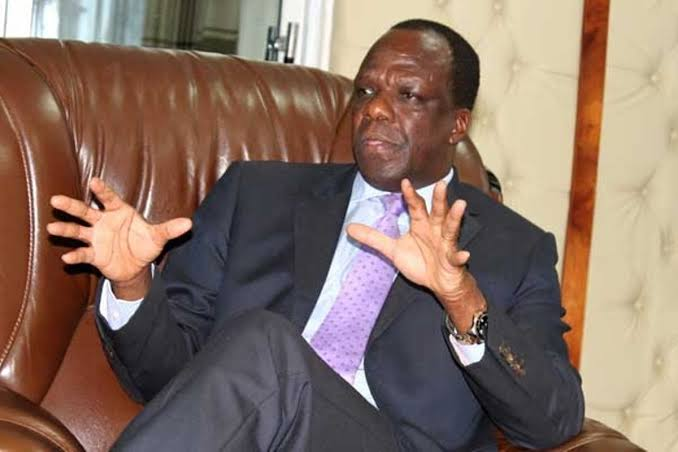
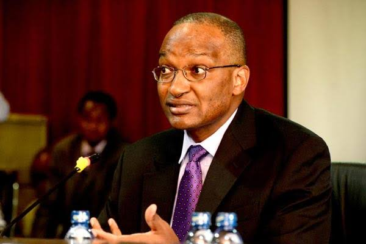

Revenue collection by the 47 counties dipped marginally in the six months to December 2019 compared to similar period in the
2018/19 fiscal year, highlighting the continued struggles by the devolved units to become self-sustaining. The Controller of Budget
(CoB) in the report for the first six month period shows the counties raised Sh15.33 billion, a fall of 0.3 percent from the similar
period in 2018/19. The drop continues to hurt delivery of key services like health, water, sewarage and roads.
The near-flat perfomance comes at a time the Treasury has unveilled plans to assist counties increase their collections, including
automation and deploying the Kenya Revenue Authority (KRA) to collect. The analysis of the CoB data shows that Narok at
63.1%, Isiolo (56.3%) and Samburu at 56.1% achieved the highest proportions of targeted annual collections. The Sh15.33
billion total collection, however, remains the second highest raised in the first six months of a financial year since
start of devolution in 2014 while the lowest remains Sh9 billion raised in the first year of devolution. The KRA
last month started collecting taxes on behalf of Nairobi County following the transfer of health services,
transport, planning and development and public works and utilities to the State and this is
expected to increase the county's own-source revenue.

CoG Chairman and Kakamega County Governor H.E Wycliffe Oparanya
Banks have up to Friday this week to submit details of all loans renegotiated under the payment relief to support businesses
and individuals during the coronavirus pandemic. The Central Bank of Kenya has put strict measures to track loans
that will be given extension including monthly reports by lenders with details showing why the relief was offered,
monitoring meausres and set timelines for loans revert to normal. Lenders will meet all the costs of restructuring
and must submit returns on 10th of each succeeding month, reads a CBK circular. The CBK said individuals and
small businesses seeking amnesty must prove that the inability to pay is directly tied to the effects of coronavirus.
Banks will then be allowed to restructure the loans without affecting the quality of loan books as they will be exempt
from prudential guidelines on classifying non-performing loans. Normally banks are required to set aside part of profits
to cover non-performing loans, hence a cost to the bank. As of December last year, Kenyans had defaulted on Sh331.3
billion, 12% of the total Sh2.774 trillion outstanding loans.

CBK Governor Dr.Patrick Njoroge
Home Coronavirus Politics County Currency
Top
The Daily Dedan by Dedan Wamalwa Odongo
Written by Dedan W Odongo
Visit us at:
dowamalwa.com
E-mail: wodedan000@gmail.com
Box 2, Mumias
KENYA